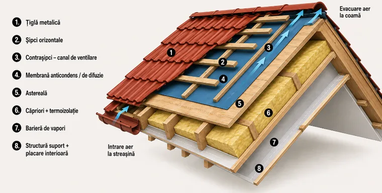
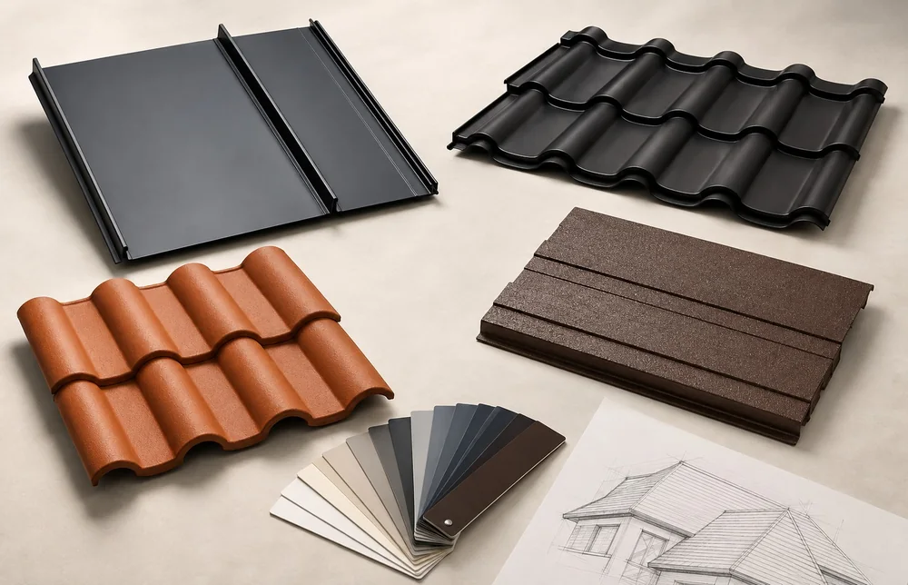
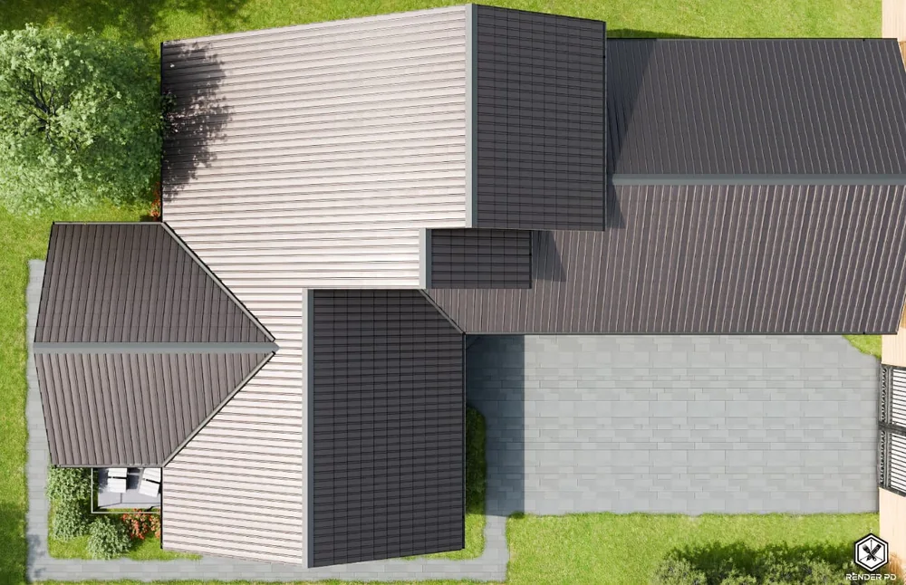
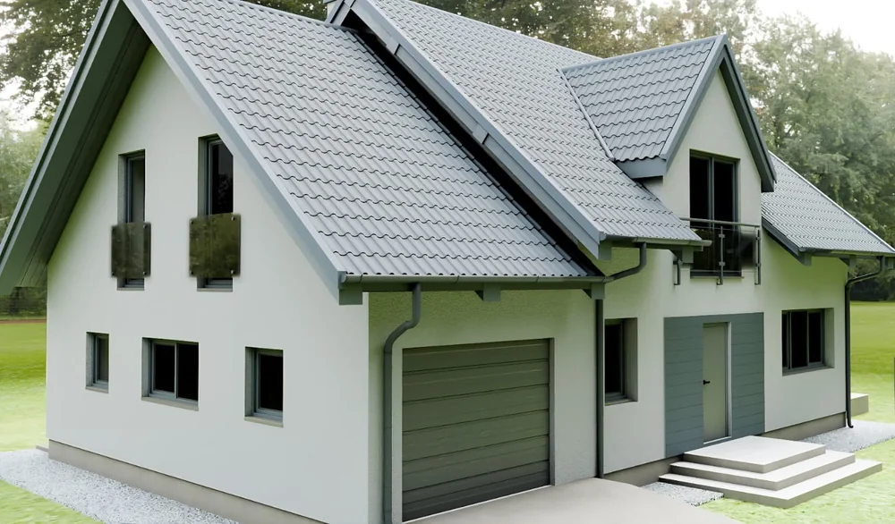
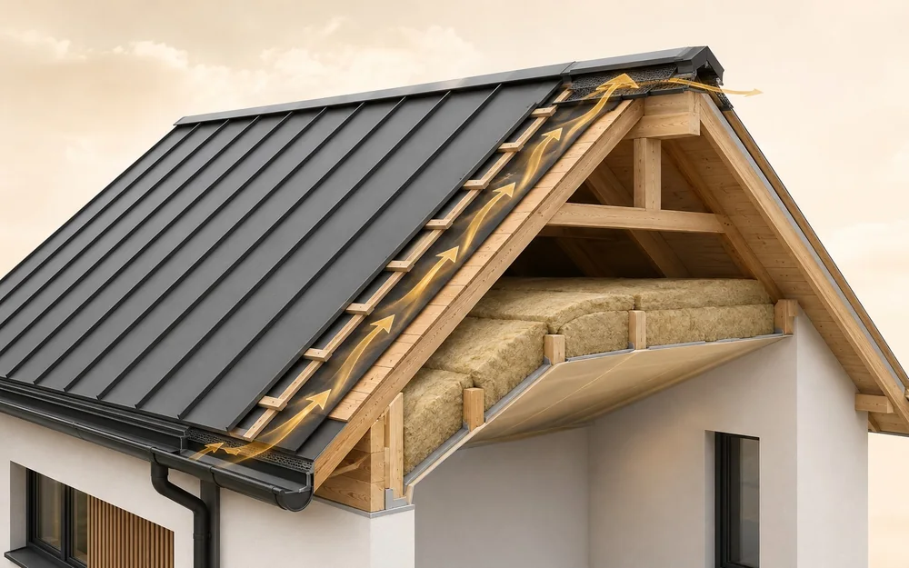
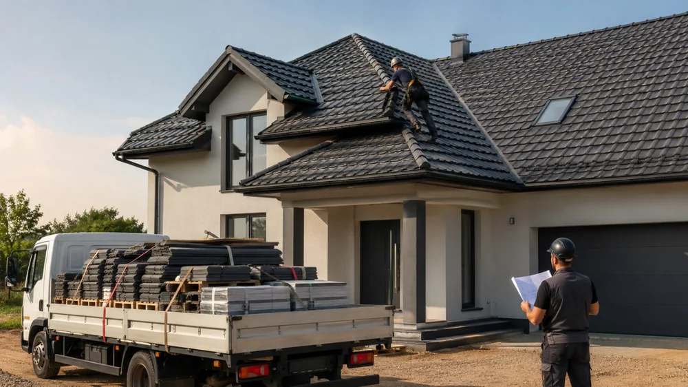

CENTRUL DE INFORMARE EXPOȚIGLA
De la alegerea materialului și estimarea costurilor până la montaj și întreținere, găsești explicații clare pentru decizii mai bune.
Căutări populare: cost acoperiș·tipuri de tablă·montaj·ventilație

ACOPERIȘUL TĂU, STRAT CU STRATUn punct de plecare pentru cei care construiesc sau renovează: tipuri de învelitori, componente obligatorii, întrebări pentru furnizori și pașii corecți până la montaj.
INFORMAȚII PRACTICE
Explicații fără termeni complicați, exemple concrete și recomandări pentru fiecare etapă a proiectului.

ComparațiiCele trei soluții pornesc de la tablă profilată, dar răspund unor proiecte diferite. Compară aspectul, modul de ofertare și datele prod…
Citește articolul →
CosturiPrețul corect nu pornește de la un singur tarif pe metru pătrat. Află ce intră în ofertă și ce informații sunt necesare pentru o estima…
Citește articolul →
InspirațieCuloarea acoperișului ocupă o suprafață vizuală mare și influențează percepția întregii case. Folosește arhitectura, materialele și lum…
Citește articolul →
ÎntreținereVentilația corectă ajută la gestionarea umidității din spațiul de sub învelitoare. Află cum funcționează traseul de aer și ce greșeli î…
Citește articolul →
MontajCele mai costisitoare probleme nu pornesc întotdeauna de la produs. Apar frecvent din măsurători incomplete, oferte greu de comparat și…
Citește articolul →Învelitoare, accesorii, membrane, ventilație și sistem pluvial — explicate simplu.
Citește articolul →DE LA INFORMAȚIE LA PROIECT
Spune-ne forma acoperișului, suprafața și preferințele. Un consultant verifică selecțiile și completează sistemul.
GHIDURI NOI, FĂRĂ ZGOMOT
Un email pe lună cu ghiduri, comparații și proiecte reale. Fără mesaje inutile.